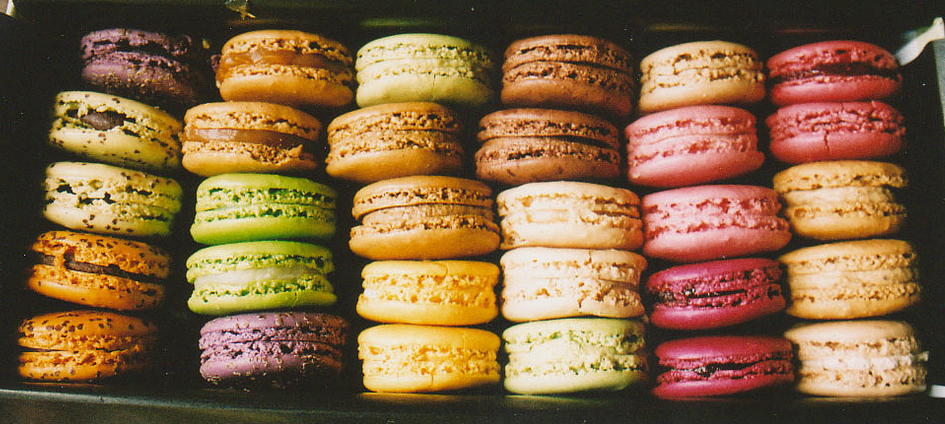
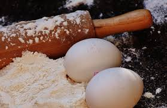

Macarons

Ingredients
- 1 3/4 cups confectioners' sugar
- 1 cup almond flour
- 3 large egg whites, at room temperature
- 1/4 teaspoon cream of tartar
- Pinch of salt
- 1/4 cup superfine sugar
- 2 to 3 drops gel food coloring (see below)
- 1/2 teaspoon vanilla, almond or mint extract
- Assorted jams
- Materials: Oven with convection setting, 4 baking sheets, 3 silicone baking mats, Fine-mesh sieve, Pastry bag with 1/4-inch round tip

Let's Start Baking!
- Preheat the oven to 300F degrees. Line 3 baking sheets with silicone mats. Combine and whisk the confectioners' sugar and almond flour in a bowl
- Sift the sugar-almond flour mixture through a sieve into a large bowl
- Beat the egg whites, cream of tartar and salt with a mixer on medium speed until frothy. Increase the speed to medium high; gradually add the superfine sugar and beat until stiff and shiny, about 5 more minutes.
- Transfer the whites to the bowl with the sugar-almond flour mixture. Draw a rubber spatula halfway through the mixture and fold until incorporated, giving the bowl a quarter turn with each fold.
- Add the food coloring and extract. Continue folding and turning, scraping down the bowl, until the batter is smooth and falls off the spatula in a thin flat ribbon, 2 to 3 minutes.
- Transfer the batter to a pastry bag fitted with the tip. Holding the bag vertically and close to the baking sheet, pipe 24, 1 1/4-inch circles. Tap the baking sheets against the counter to release air bubbles.
- Let the macarons sit at room temp until the tops are no longer sticky. Slip another baking sheet under the first batch to protect the cookies from the heat.
- Bake the first batch until the cookies are shiny and rise 1/8 inch to form a "foot,". Transfer to a rack to cool completely. Repeat, using a double sheet for each batch. Peel the cookies off the mats and sandwich with a thin layer of jam.